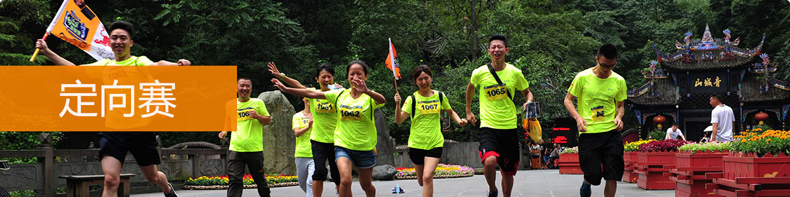
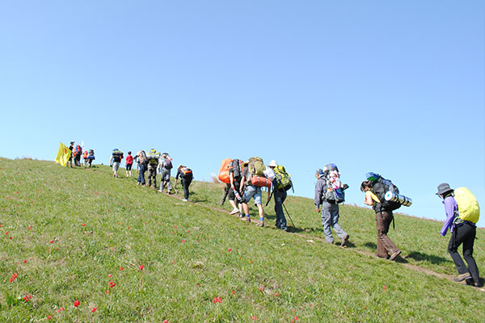
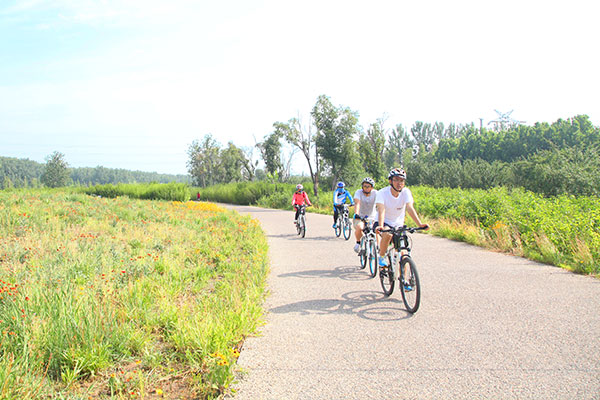
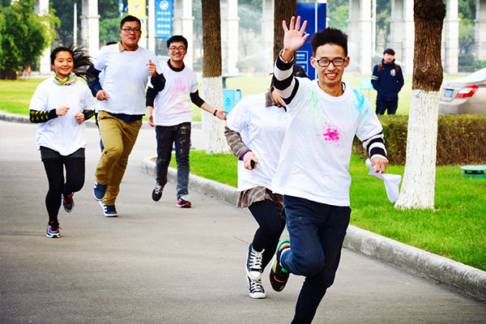

在常规户外旅行的基础上增加趣味挑战任务，通过地图和关卡线索找到相应的地方并完成关卡项目挑战，只有通过这些团队挑战考验之后方可获得通关信息，增加了更多的趣味性和策略性。体能与智力想结合，是目前最受欢迎的团建方式之一。
A.徒步定向
运用最经典的徒步路线，开展内容丰富，安全有效的团队竞赛和互动分享，激发企业内在潜力，凝聚团队精神，锻炼意志品质。
适合团队：企业团队、成熟型团队、创业团队、成长型团队

B.骑行定向
选取安全的环湖骑行路线，途中设置赛程关卡游戏，培养协同合作能力，增强团队凝聚力。
适合团队：挑战型团队、培训团队、企业团队

C.公园定向
在大型公园内进行的定向赛充满乐趣和挑战，让参与者在户外运动中发现乐趣、寻找自我、释放压力。
适合团队：创业团队、社团联谊、亲子团队
